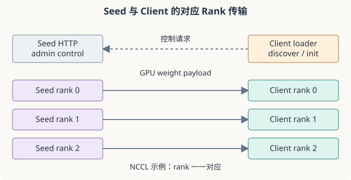
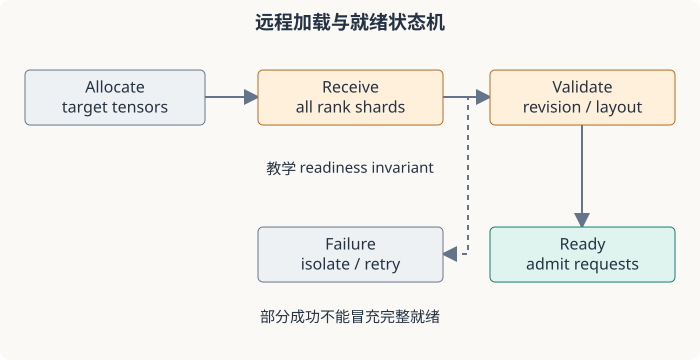

第 44 章 · SGLang 生产系统
R-Fork：Seed 实例、GPU-to-GPU 权重传输与 Ready Gate
如何从已经运行的模型实例装载同一权重，而不是重新经过完整 checkpoint 读取？
如何从已经运行的模型实例装载同一权重，而不是重新经过完整 checkpoint 读取？ 从具体反例出发，连接算法、工程接口与测量边界。
1. 冷启动慢在哪里
新推理实例必须装载模型 tensor，建立 rank layout、量化/后处理、KV pools、kernel/graph 等，最终才 Ready。传统从 checkpoint 读盘的 I/O 和转换可成为瓶颈。R-Fork 用运行中 seed instance 的权重做远程加载源，避免重复完整的存储读取路径；zero-copy 描述传输路径，不等于接收端无需权重显存，也不是 OS fork 或共享 request KV。
2. 控制面和数据面分开
client 先准备模型和目标 rank 布局，通过 seed HTTP admin 接口建立 send group 或查询 transfer metadata，数据再经 GPU-to-GPU 通道传输。NCCL 代码明确对应 TP rank pairs，group world size=2，需要相同 parallelism strategy；不能把 rank0 的 shard 随意发给 rank1。

3. 三条后端路径
NCCL：seed/client 按 rank 配对构组，触发 send。TransferEngine：seed 发布注册内存和传输元信息，client 注册目标区域并拉取。ModelExpress：集中 registry 管理 metadata、兼容源发现，无 ready source 时走 native load 并发布；transport 可配置 NIXL 或 TransferEngine。三者的协调机制、网络条件与错误路径不同。
4. 理论传输时间下界
rank r 需复制 W_r bytes，有效带宽 B_r bytes/s；并行且无共享拥塞时数据阶段下界 max_r(W_r/B_r)。若 4 ranks 各传 8 GiB，单 rank 有效 4 GiB/s，理想数据阶段≥2 s；共享链路总有效带宽仅4 GiB/s 时总32 GiB≥8 s。这里只算 payload，不是启动实测。
5. Ready Gate 与失败恢复
工程上接收端应核查 model revision、layout、参数完整性、必要后处理、通信同步与服务健康，再标 Ready。任何 rank 失败时都不能把部分加载视为成功。若 seed 同时发生 RL refit，必须协调一致快照与权重版本；本文的 readiness model 是推荐 invariant，不声称 R-Fork 已实现所有校验或事务回滚。

6. 与 Checkpoint Engine 和 RL Refit 的边界
第30章 Checkpoint Engine 使用 checkpoint workers、磁盘 shards、IPC 和 weight update；R-Fork 数据源是 ready serving instance；第35章 refit 更新 rollout policy，可能涉及旧 KV。不能复制 seed 的活跃请求状态、CUDA graph handle 或 KV prefix 并宣称实例克隆完成。
7. 部署和安全
--load-format remote_instance 配合 --remote-instance-weight-loader-backend；NCCL seed/client 共享 admin key，密钥只通过受保护的配置注入，禁止写入教程或日志；网络端点必须受控。测量 seed 服务干扰、源权重版本、transfer/setup/post-load/ready time、失败率；并发 fork 要考虑 seed 网卡与 HBM 带宽竞争。
8. 交互：选择工作负载与反例
Remote Weight Loading 教学实验
全部 rank 到齐：4/4 rank payload 完成且校验通过，才允许 readiness model 进入 ready。
rank 缺失：3/4 rank 完成，仍不可接纳正常模型请求。
版本不符：4/4 到齐但有 rank revision 不符，拒绝 ready，隔离并修复。
教学模型仅验证机制与反例，不代表真实 GPU benchmark。
9. CPU 最小实验
下载 rfork_readiness.py，使用标准库运行。源文件包含确定性输出及正反例断言。
python3 examples/rfork_readiness.py实验是教学抽象，不运行真实 GPU serving、collectives 或网络传输。
10. 源码阅读路线与证据
固定上游快照 b323e8e6e3aacfe606b11a2ef51ae73bc8b283a7，区分当前实现、工程建议及教学推导。
- Usage / NCCL as backend：remote_instance load format supports NCCL, TransferEngine and ModelExpress; NCCL seed admin endpoints require matching admin credentials.
- seed admin headers / trigger send group and transfer：NCCL control requests create corresponding TP rank pair groups and trigger weight transfer.
- RemoteInstanceModelLoader：The loader chooses remote weight transport by backend.
- get_remote_instance_transfer_engine_info_per_rank / register_memory_region：TransferEngine uses per-rank transport info and model parameter memory registration.
- ModelExpress as backend：ModelExpress registry lets instances discover compatible ready sources; if none exists, native load and publication are supported.